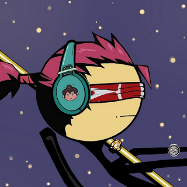

Azuki NFTs
Azuki is a brand, a brand for the metaverse. Azuki advertises itself as a collection of 10,000 avatars that give you membership access to The Garden. It starts with exclusive streetwear collabs, NFT drops, live events, and much more that will be revealed over time. Community ownership in Azuki allows for a new genre of media which the world has yet to explore. An Azuki is your identity in the metaverse “Let's build together”.
Azuki by itself isn’t a scam, Azuki has ben passionate on the project and the create very beautiful artwork for people to buy. Usually, those arts are profile pictures in which you can use online, Azuki promises things that are possible, and they have been very active on their community. The reason Azuki has been on the list is because other people have stolen the Azuki name and adding something extra to it, they try to manipulate the people and by doing so, they sell their own NFTs collections in which once they have sold out, they immediately disappear and abandon the project all together, leaving the arts to drop in prices and without delivering on their promises.
Example of different kinds of Azuki NFTs
Since there are many “Azuki” NFT collections, I’ve gathered some of them, and here they are:
| Name | Album Prices | Owners | Floor Price ($) | Total Earns ($) | Status |
|---|---|---|---|---|---|
| Azuki | 10.000 | 5.300 | 24.046,19$ | 514.705.818$ | Active |
| Azuki Mfer | 10.000 | 2.300 | 9,38$ | 943.079,94$ | Inactive |
| AzukiApeSocialClub | 3.300 | 1.300 | 187,68$ | 1.358.316,63$ | Unknown |
| Fast Food Azuki | 2.200 | 1.200 | 65,69$ | 53.722,71 | Unknown |
| Mutant Azuki | 1.500 | 377 | 23,46$ | 25.805,67$ | Inactive |
| Azuki Demon | 671 | 363 | 75,07$ | 3.049,76$ | Inactive |
| AzukiPunks | 4.500 | 955 | 4,69$ | 4.457,34$ | Inactive |
While Azuki by itself isn’t a scam, as you can see by the table above, people have tried to take advantage of the Azuki brand by making themselves one and selling it as Azuki brand. Some have been successful and some not really. There aren’t many archives to go through and investigate for each one, but we can safely say that this isn’t giving a good look on the NFT community.